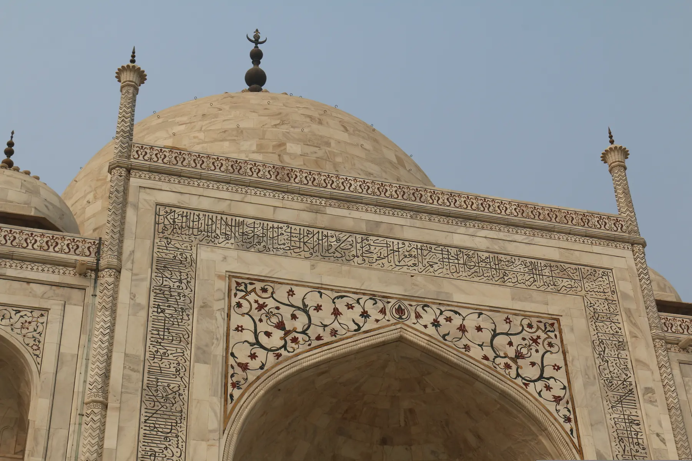
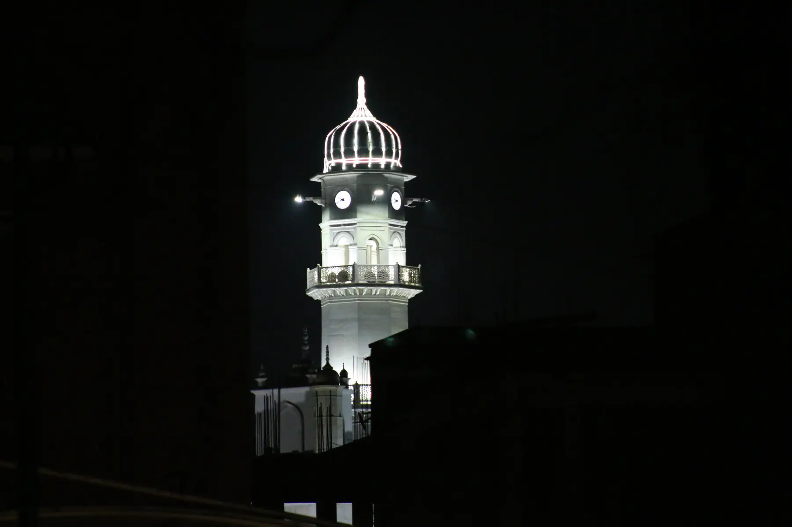

Chapter 22 of 22
A Final Message
Undated closing entry



1 / 3
Dear friends,
When I started writing, my goal was simple: to take all of you along on this journey, even if you couldn’t physically be with us. It’s been a privilege to share these experiences, and I hope they brought Qadian and its blessings a little closer to your hearts.
Along the way, I’ve received so much love, encouragement, and helpful advice. I’m truly grateful for all of it. Thank you for following along and for your kind words.
Of course, there were some stories and inside jokes I couldn’t include, and there might be moments I missed that were important to you. Please forgive me for any omissions. Feel free to message me if there’s something you’d like me to know or share.
Please keep me and my family in your prayers. May Allah bless you all and grant us the opportunity to undertake such journeys again.
With love and gratitude,
Anas Mangla